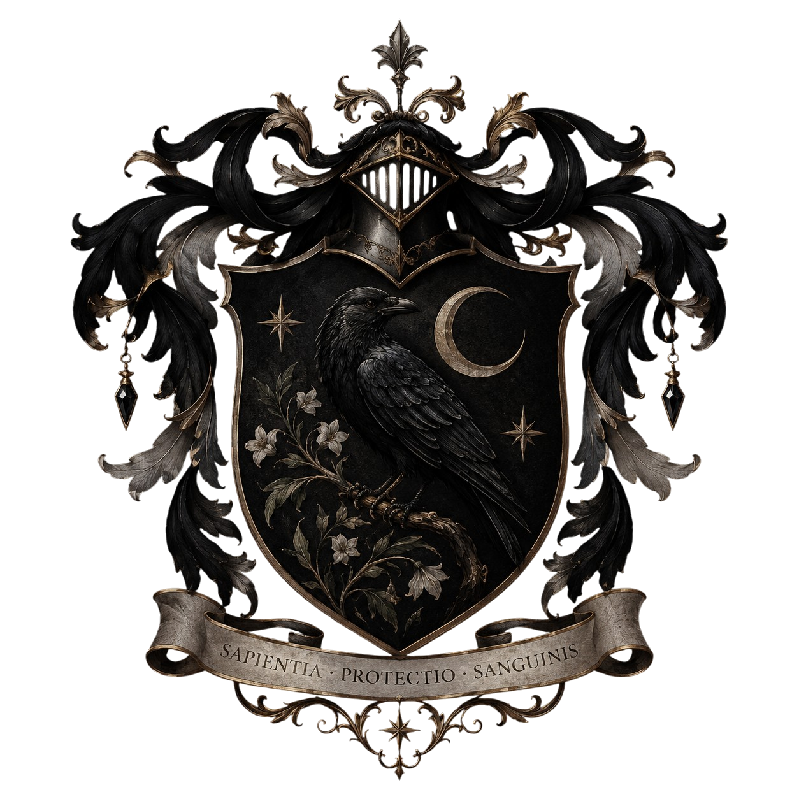
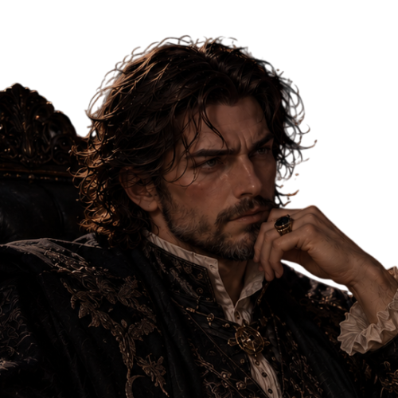
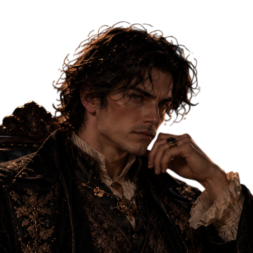
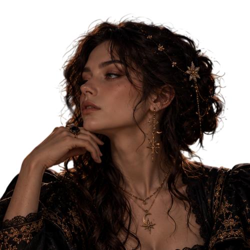
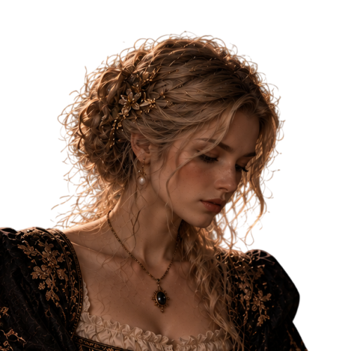
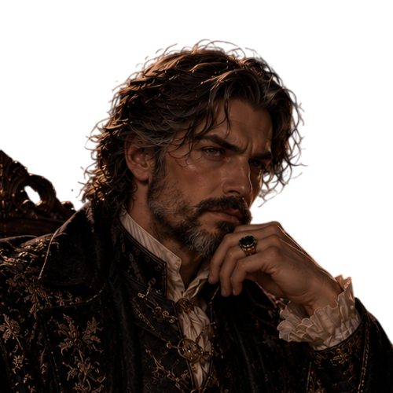
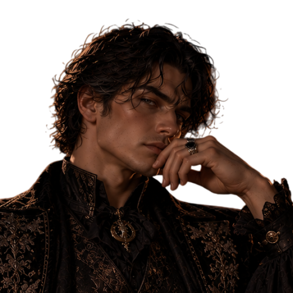
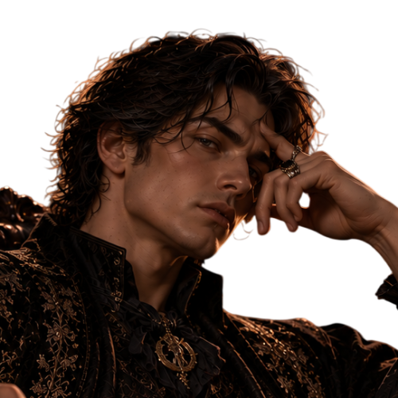
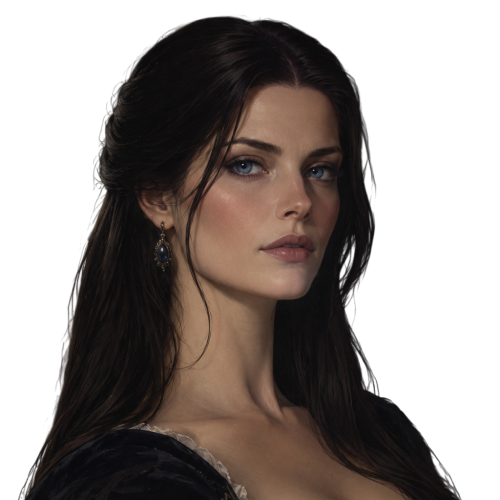

La Maison Blackhorns

« Sapientia · Protectio · Sanguinis »
La sagesse, la protection et le sang.
Dans les anciennes archives du monde sorcier britannique, certains noms étaient associés à la richesse, d'autres à la puissance ou à l'influence politique. Celui des Blackhorns évoquait quelque chose de différent : le savoir, le secret et la fidélité envers les siens.
La famille Blackhorne, dont descend Hazel Blackhorns, devenue Hazel Rivers, appartient à ces anciennes lignées de sang-pur qui ont traversé les siècles sans chercher à attirer l'attention.
Leur histoire est intimement liée à la médecine magique, à l'étude des enchantements protecteurs et à la conservation de connaissances parfois oubliées.
Mais derrière leur réputation respectable se cache également une histoire familiale marquée par des sacrifices, des désaccords et des secrets que certaines générations ont préféré ne jamais révéler.
I. Les origines — Le premier Blackhorns

XIIe siècle ·
L'histoire connue de la famille commence avec Edmund Blackhorns, dans le nord de l'Angleterre.
Edmund était un sorcier particulièrement instruit, issu d'une petite communauté magique installée près de vastes forêts.
Contrairement à de nombreux sorciers de son époque, il ne s'intéressait ni aux duels ni à la recherche de prestige. Il préférait consacrer son temps à l'étude des plantes médicinales, des potions et des sorts de protection.
Son tempérament était réputé difficile. Silencieux, exigeant et peu démonstratif, il accordait rarement sa confiance. Cependant, ceux qui le connaissaient savaient qu'il était capable de prendre de grands risques pour protéger les personnes dont il avait la responsabilité.
Il épousa Aveline Thorncroft, une sorcière spécialisée dans les remèdes magiques et les propriétés curatives des plantes.
Ensemble, ils établirent une demeure isolée, entourée d'arbres centenaires et protégée par plusieurs enchantements de dissimulation.
C'est dans cette demeure que furent rédigés les premiers manuscrits médicaux de la famille.
Edmund répétait souvent à ses enfants :
« Le savoir n'a de valeur que lorsqu'il permet de préserver ce qui mérite de l'être. »
Cette conviction allait devenir le fondement de la philosophie Blackhorns.
II. Le corbeau noir — Naissance du blason

XIIIe siècle ·
Le fils aîné d'Edmund, Alaric Blackhorns, hérita de la demeure familiale et de ses manuscrits.
Alaric était un sorcier méticuleux, passionné par l'étude des enchantements défensifs.
À cette époque, les relations entre les communautés sorcières et moldues étaient parfois tendues. La famille Blackhorns choisit donc de renforcer les protections de son domaine afin de préserver sa tranquillité et ses recherches.
Un corbeau noir avait pris l'habitude de se poser sur les branches d'un vieux chêne situé près de la demeure.
L'oiseau revenait régulièrement, au point de devenir une présence familière.
Alaric, qui admirait l'intelligence et la capacité d'observation de ces animaux, décida d'en faire le symbole principal de sa famille.
Il fit réaliser un premier écu représentant un corbeau perché sur une branche.
Le choix n'était pas anodin.
Pour les Blackhorns, le corbeau représentait trois qualités essentielles : l'intelligence, la vigilance et la mémoire.
L'oiseau ne symbolisait ni la mort ni la magie noire, contrairement aux interprétations parfois faites par des étrangers.
Il représentait plutôt celui qui observe avant d'agir, qui apprend de son environnement et qui veille sur ce qui lui a été confié.
Au fil des générations, le corbeau devint indissociable du nom Blackhorns.
III. La lune et les étoiles — L'héritage d'Eleanor

XIVe siècle ·
Plusieurs générations après Alaric naquit Eleanor Blackhorns, une sorcière dont les travaux allaient profondément marquer l'histoire familiale.
Eleanor s'intéressait à l'astronomie et à l'influence des cycles naturels sur certaines préparations magiques.
Elle ne prétendait pas que la lune possédait des pouvoirs mystérieux capables de transformer n'importe quelle potion. Ses recherches portaient essentiellement sur les variations de propriétés de certaines plantes selon leur période de récolte et leurs conditions de conservation.
Elle était également connue pour son caractère indépendant.
À une époque où l'on attendait souvent des héritiers qu'ils reprennent les travaux de leurs parents, Eleanor préféra poursuivre ses propres recherches.
Elle demanda que l'on ajoute un croissant de lune et deux étoiles au blason familial.
Le croissant représentait les connaissances encore incomplètes, tandis que les étoiles rappelaient qu'il restait toujours quelque chose à découvrir.
Ces symboles furent conservés par ses descendants.
IV. Les fleurs blanches — Le sacrifice de Dalia

XVe siècle ·
Dalia Blackhorns fut l'une des premières membres de la famille à acquérir une réputation importante dans le domaine des soins magiques.
Elle étudia longuement les potions curatives et les traitements des blessures provoquées par certaines créatures magiques.
Elle possédait un tempérament très différent de celui de ses ancêtres.
Patiente, douce et profondément attentive aux autres, Dalia considérait que la médecine ne devait pas être réservée aux familles les plus influentes.
Elle soignait les sorciers qui se présentaient à sa porte, quelle que soit leur origine familiale.
Cette attitude provoqua plusieurs disputes avec certains membres de sa parenté, particulièrement ceux qui estimaient que les connaissances Blackhorns devaient rester exclusivement entre les mains de leur lignée.
Dalia ne céda jamais.
Au cours de sa vie, elle transmit une partie de ses travaux à plusieurs guérisseurs extérieurs à la famille.
Après sa mort, ses descendants firent ajouter des fleurs blanches au blason.
Elles symbolisaient la guérison, la compassion et le souvenir de cette ancêtre qui avait placé la vie humaine au-dessus des traditions.
V. La devise — Sapientia · Protectio · Sanguinis

XVIe siècle ·
C'est Octavius Blackhorns, érudit et spécialiste des enchantements protecteurs, qui fit inscrire la devise familiale sur le blason.
Il choisit les mots :
SAPIENTIA · PROTECTIO · SANGUINIS
Sagesse · Protection · Sang
La formule, construite dans un latin héraldique stylisé, devait résumer les trois responsabilités que les Blackhorns estimaient devoir transmettre à leurs descendants.
Sapientia — La sagesse. Le savoir devait être acquis avec patience et utilisé avec discernement.
Protectio — La protection. Les compétences magiques d'un sorcier impliquaient une responsabilité envers les personnes qu'il pouvait aider.
Sanguinis — Le sang. Il représentait les liens familiaux, les ancêtres et la transmission des connaissances.
Cette dernière notion fut parfois mal interprétée.
Bien que les Blackhorns soient une ancienne famille de sang-pur, tous ne partageaient pas les mêmes opinions sur l'importance de l'ascendance.
Certains défendaient une vision très traditionnelle de la lignée. D'autres, notamment les descendants de Dalia, considéraient que la famille devait avant tout être définie par ses actes.
Ces différences allaient provoquer plusieurs tensions au cours des siècles suivants.
VI. Le heaume et les ornements noirs

XVIIe siècle ·
Sous l'autorité de Severin Blackhorns, le blason prit une apparence beaucoup plus solennelle.
Severin était un sorcier rigoureux, attaché à la préservation des archives et des biens familiaux.
Il fit ajouter un heaume métallique au-dessus de l'écu, entouré de grands ornements noirs et argentés.
Le heaume symbolisait la responsabilité des héritiers, tandis que les ornements rappelaient les branches de l'ancien arbre qui entourait la demeure ancestrale.
Les couleurs furent volontairement sobres.
Le noir représentait la discrétion et la constance.
L'argent évoquait la connaissance, la lucidité et la retenue.
Quant aux touches de bronze et d'or vieilli, elles rappelaient l'ancienneté de la famille sans lui donner l'apparence d'une maison royale.
Severin estimait qu'un blason devait inspirer le respect, non la crainte.
VII. Les siècles de silence

XVIIIe siècle ·
Au XVIIIe siècle, Nathaniel Blackhorns hérita d'une famille respectée, mais devenue plus discrète.
Plusieurs de ses proches avaient choisi de travailler dans des domaines différents : certains étudiaient les potions, d'autres la botanique ou les enchantements.
Nathaniel se consacra principalement à la conservation des archives.
Il entreprit de classer les documents accumulés depuis l'époque d'Edmund et d'Eleanor.
Grâce à lui, de nombreux manuscrits furent restaurés et préservés.
Il fit également établir une généalogie détaillée, recensant les principales branches de la famille.
Cependant, Nathaniel avait une particularité : il refusait que les enfants soient élevés dans l'idée que leur nom les rendait supérieurs aux autres sorciers.
Cette position ne faisait pas l'unanimité parmi ses proches.
Elle fut néanmoins transmise à plusieurs générations, notamment à celle dont descendrait Hazel.
VIII. La génération de Hazel Blackhorns

XIXe siècle ·
En 1858 naquit Hazel Blackhorns.
Elle grandit dans une famille où l'éducation occupait une place essentielle.
Très jeune, elle manifesta un intérêt particulier pour les potions médicinales et les soins magiques.
Contrairement à certains de ses ancêtres, Hazel ne cherchait pas à consacrer toute sa vie à l'étude théorique.
Elle voulait exercer un métier qui lui permettrait d'utiliser concrètement ses connaissances.
À Poudlard, elle fut répartie à Serdaigle, où elle se distingua par son sérieux, son intelligence et sa grande capacité de travail.
Hazel possédait un tempérament réservé et exigeant. Elle pouvait paraître distante, particulièrement avec les personnes qu'elle connaissait peu.
Mais derrière cette apparence se cachait une femme profondément attachée à ses proches.
Elle devint médicomage, poursuivant ainsi une tradition familiale remontant notamment à Dalia Blackhorns.
C'est également au cours de sa vie qu'elle rencontra Dean Rivers, lui aussi ancien élève de Serdaigle et passionné par les créatures magiques.
Leur mariage réunit deux familles anciennes aux histoires différentes, mais partageant plusieurs valeurs communes : la connaissance, la responsabilité et la transmission.
Hazel conserva un attachement particulier au nom Blackhorns.
Elle n'abandonna jamais complètement les traditions de sa famille d'origine.
Dans la demeure des Rivers, certains ouvrages médicaux et documents anciens provenant des archives Blackhorns occupent toujours une place importante.
Et même si elle n'en parle pas constamment, elle veille à ce que ses filles connaissent cette partie de leur héritage.
IX. Inaya et Izy — Deux héritages réunis
En 1893, Hazel et Dean Rivers sont tous deux âgés de 35 ans.
Leurs filles, Inaya, née en 1882, et Izy, née en 1883, sont les descendantes de deux anciennes lignées magiques.
Inaya, avec ses yeux gris intenses, sa nature observatrice et son caractère ambitieux, possède plusieurs traits qui pourraient rappeler les Blackhorns.
Son goût pour les livres, sa curiosité et sa tendance à garder ses émotions pour elle évoquent notamment certains récits consacrés à Eleanor et Severin.
Izy, avec ses yeux vert clair, ses lunettes et son tempérament beaucoup plus joyeux, ressemble davantage à son père.
Cependant, elle partage avec les Blackhorns une grande curiosité et une affection sincère pour les êtres vivants.
Les deux sœurs ont hérité de traditions familiales parfois très différentes.
Les Rivers leur transmettent leur fascination pour la nature, les créatures magiques et la recherche du savoir.
Les Blackhorns leur rappellent l'importance de la prudence, de la protection et de la mémoire familiale.
Aucune des deux n'est obligée de reproduire exactement le parcours de ses ancêtres.
Et c'est peut-être ce que Hazel souhaite le plus leur transmettre.
X. La signification du blason Blackhorns
Le corbeau noir
Intelligence, vigilance et mémoire.
Le croissant de lune
Recherche et connaissances encore à découvrir.
Les étoiles
Curiosité et persévérance.
Les fleurs blanches
Guérison, compassion et souvenir.
Le heaume argenté
Responsabilité et protection de l'héritage.
Une dernière tradition Blackhorns
Dans les archives familiales existe un ancien ouvrage relié de cuir noir, orné d'un petit corbeau argenté.
Chaque génération peut y inscrire une découverte, une observation ou un enseignement qu'elle estime digne d'être transmis.
Lorsque Hazel quitta sa famille pour construire sa vie avec Dean, elle reçut une copie de plusieurs pages de cet ouvrage.
Sur la première figurait une phrase attribuée à Dalia Blackhorns :
« Protéger son sang ne signifie pas fermer sa porte au reste du monde. »
Hazel conserva cette phrase.
Elle résumait parfaitement la manière dont elle souhaitait élever ses filles : dans le respect de leurs origines, mais sans jamais leur apprendre à mépriser celles des autres.
Car si les Rivers enseignent que toute rivière doit continuer de couler, les Blackhorns rappellent qu'il faut parfois savoir s'arrêter pour protéger ce qui compte.
Retour